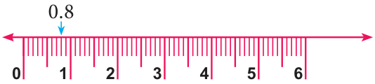
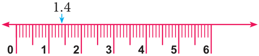

We have already learnt to represent fractions on a number line. Now let us see the representation of decimal numbers on a number line. Consider the decimal number 0.8. That is there are 8 tenths \(\left(\frac{8}{10}\right)\). We know that 0.8 is more than 0 and less than 1. Let us divide the unit length into ten equal parts and take 8 parts as shown below.
Draw a number line and divide the intervals into ten equal parts. Now 0.8 lies between 0 and 1.

Can we represent 1.4 on a number line? Let us see now. 1.4 has one and four tenths in it. So it lies between 1 and 2. It is marked on the number line as shown below.

Try these
- Mark the following decimal numbers on the number line.
- 0.3
- 1.7
- 2.3
- Identify any two decimal numbers between 2 and 3.
- Write any decimal number which is greater than 1 and less than 2.